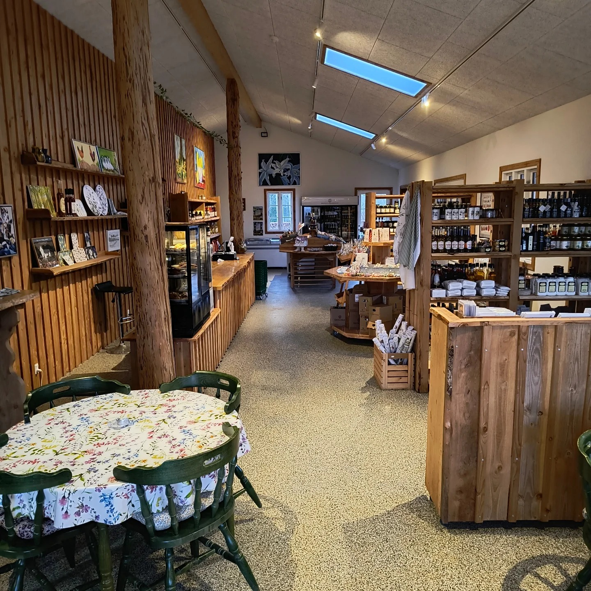

History
Gartneri Aarhus has such a lovely story behind it. It's been part of the local farming community for years and focuses on growing organic fruits and vegetables. The farm is small but incredibly charming—it feels real and authentic, with so much heart behind everything they do.
Nowadays
Right now, Gartneri Aarhus is all about fresh, organic produce and sustainable farming. They've really mastered combining traditional farming with environmentally friendly methods. Whether it's their seasonal vegetables, fruits, or herbs, everything is grown with care and love.

Høbjerg Gartneri Interior
My favourite products
Whenever I visit, I always end up picking up some of their freshest produce. Their tomatoes are amazing—so juicy and flavorful—and I always grab a mix of leafy greens for fresh salads. Their seasonal fruits are always a treat, and I can't resist their fragrant herbs to add that perfect finishing touch to meals.

Fruits

Vegetables
Why I like Gartnergården Aarhus
One of my favorite things about Gartneri Aarhus is that it offers more than just fresh produce. They have a working farm where you can visit and see their pigs, chickens, cows, and other animals roaming freely. It's such a cool experience to walk through the farm and get to connect with the animals. It makes me feel more connected to where my food comes from.

Little piggy in the farm

Hen and her little chicks
How to find them
Address: Gartnergården, Skødstrup, Denmark Website: www.ggaarhus.dk Phone: +45 40 21 15 47 Social Media: https://www.facebook.com/GGaarhus/